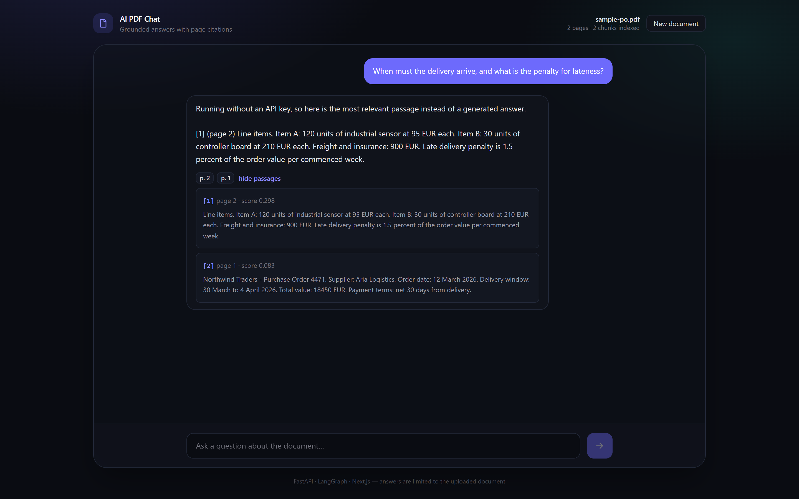
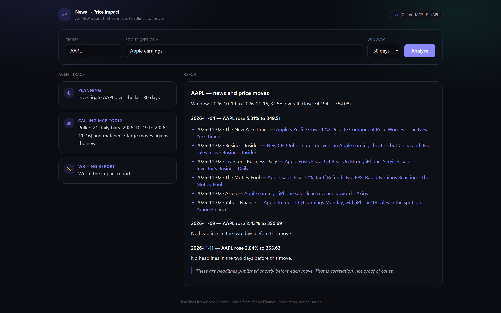
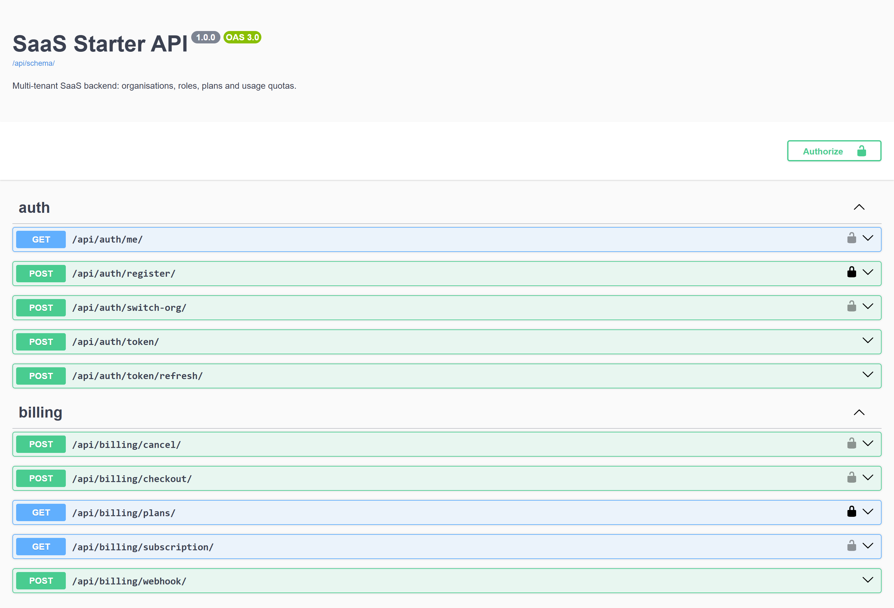
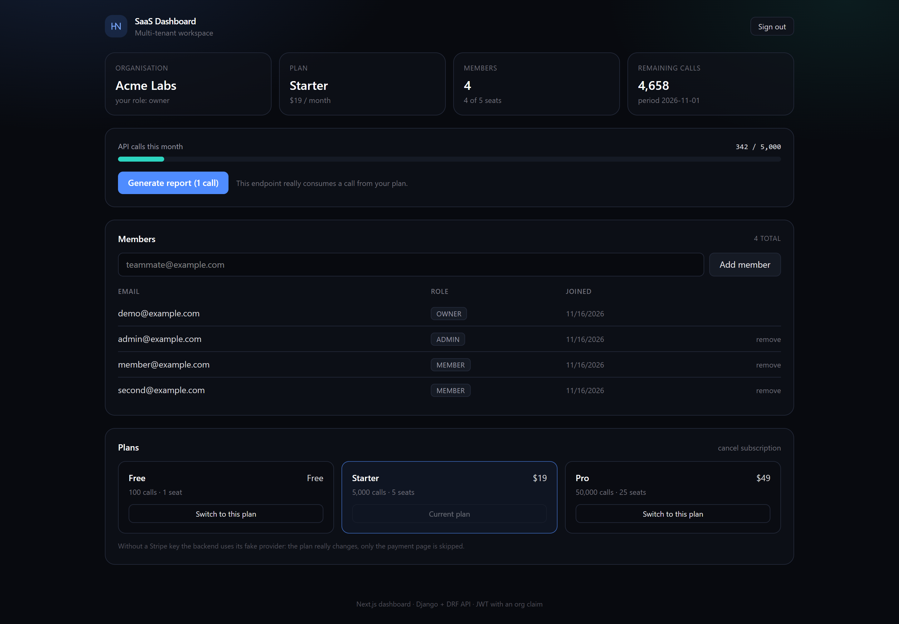

Full-stack engineer · AI systems
I build AI products end to end —
retrieval, agents, and the SaaS around them.
Four working systems, not screenshots: a document assistant that cites pages, an agent that connects news to price moves over the Model Context Protocol, a multi-tenant SaaS backend with metered plans, and the dashboard that runs on it.
- 4 live systems
- 67 automated tests
- 2 MCP servers & agents
Selected work
Every card links to a real repository with tests, CI and a README that states its limits.


Django SaaS Starter
Multi-tenantOrganisations, roles, plans and metered quotas. The active tenant lives inside the JWT, so a client cannot reach another organisation by editing a URL.
- Django 6
- DRF
- JWT
- Stripe

What I actually work with
Listed only where a repository above proves it.
AI systems
- Retrieval-augmented generation
- LangChain & LangGraph
- Model Context Protocol (servers and clients)
- Streaming responses over SSE
Backend
- Python, FastAPI, Django + DRF
- PostgreSQL, JWT, multi-tenancy
- Stripe subscriptions and webhooks
- pytest, Docker, GitHub Actions
Frontend
- TypeScript, React, Next.js App Router
- Tailwind, accessible markup
- Hand-written HTML, CSS and DOM
- This page: no framework, no build step
How I work
-
01
Understand the job, not the ticket
One call to agree what "done" means, and what is explicitly out of scope.
-
02
Build the smallest working slice
End to end and runnable first. Features come after the path works.
-
03
Test the parts that can break quietly
Auth, tenancy, quotas, parsing. Anything else is decoration.
-
04
Hand over something you can run
README with a quickstart, a demo account, and limitations written down.
Need something built?
I take on small, well-defined builds: an AI feature on top of your data, a SaaS backend, or fixing the multi-tenant parts of one you already have.